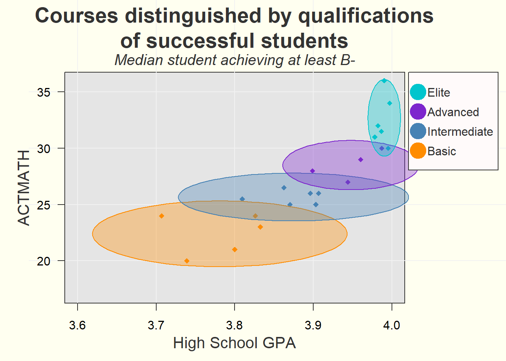
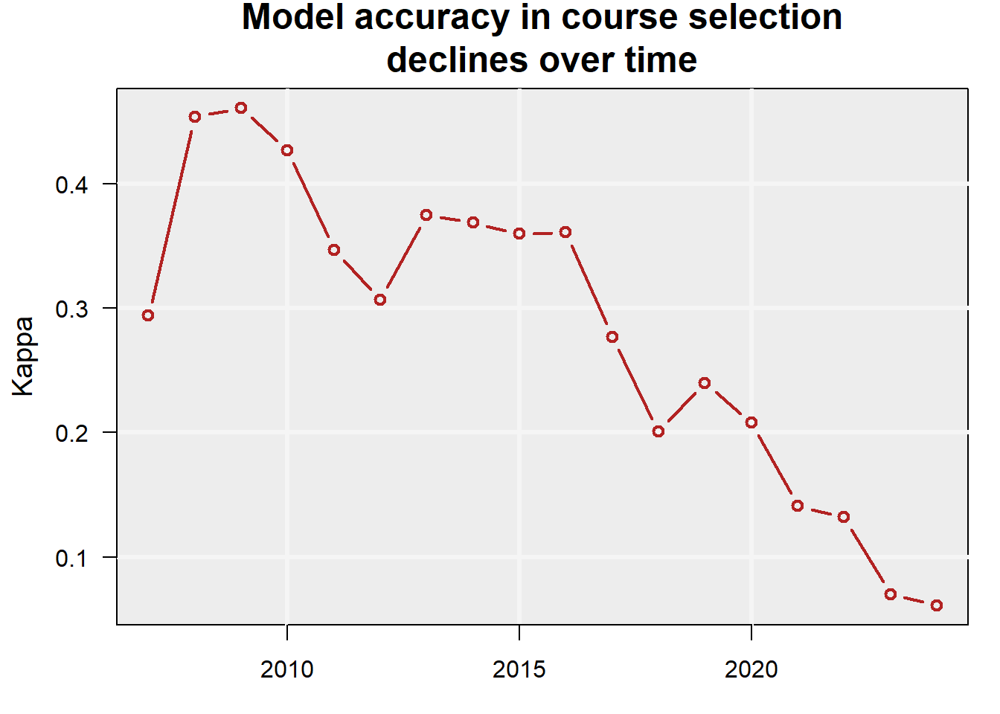

Project Overview for Math Course Recommendation
Executive Summary
This report finds that comparing incoming students to the prior year’s successful students can create a mild-yet-useful course guide.
This report finds that both high school GPA and ACT Math test scores have consistently moderately predicted grade performance and course selection in math courses for first time freshmen.
Using these two qualifications, and comparing incoming students to the prior year’s successful students, creates a course guide.
This report also finds that there are often several equivalent course options for any particular student with a given set of qualifications. It also finds that high school GPA and ACT math test scores are not highly predictive of grade performance, suggesting that additional data (such as individual effort) may further explain grade performance.
Summary
In order to improve academic outcomes in math courses for first time freshmen, an investigation into predictors of academic performance and course selection is made using data available at the time of admissions (called “pre-University data.”). Predictive models (logistic regression, categorical boosting, and extreme gradient boosting) are trained that target grade performance or course selection. Time series analyses with extreme gradient boosting models are conducted. Accuracy values of 0.20-0.28 R2 in grades and a Kappa of 0.40 in identifying students at risk of failing are achieved. In course selection, a Kappa as high as 0.45 was achieved in 2009 before declining to values less than 0.1 in 2023 and 2024.
Over time and across models, the best predictor of course selection are ACT math test scores, and the best predictor of academic performance is the high school GPA. Their derivative z-scores and combined z-score distance also figure prominently. (The z-scores and combined distance are calculated by comparing the qualifications of incoming students with the qualifications of last year’s successful students per course. “Success” is defined as achieving a GPA of at least 2.7 or B-minus.)
Because the combined distance is a strong predictor, comparing incoming students with last year’s successful students is concluded to reasonably guide course recommendation.
A course guide is created that compares the incoming students to the prior year’s successful students (GPA >=2.7) in terms of high school GPA and ACT math test scores. The best model was used to create counter-factual predictions of grade performance in alternative courses.
The guide finds that course recommendations heavily overlap in their qualifications, or that many courses have equivalent grade expectations for a given incoming freshmen.
A next step is to calculate a theoretical benefit in using the course guide by identifying passing counter-factual grades in alternative courses for students who failed (achieved a GPA <1.7).
Background
Currently, math course placement for first time freshmen is under consideration due to internal and external pressures in a dynamic environment:
- External concerns: Academic preparedness for first time freshmen has declined nation-wide, including for math12.
- Internal concerns: Several internal concerns have been voiced, including:
- Advisors having insufficient guidelines to place students in courses, leading to mis-placed students. This misplacement may cause a strain on instructors, tutors, and classroom environments and result in poor academic performance.
- Students taking courses beneath their ability, exacerbating course capacity constraints.
- Math placement tests may be expensive and logistically difficult to administer at scale.
- Advisors having insufficient guidelines to place students in courses, leading to mis-placed students. This misplacement may cause a strain on instructors, tutors, and classroom environments and result in poor academic performance.
- Changing situation: The mix of math courses selected, submission rates of ACT math test scores, grade inflation (or compression), and the relationship between incoming qualifications and course selection are changing.
Research Questions
Main question:
(Q0) Can improving math course recommendations improve educational outcomes?
Next step: Calculate improvement in failure rates using the predictive model to estimate an optimum course selection.
Sub questions:
(Q1) Can math course grade performance be predicted with minimal pre-University data?
Grade performance was estimated with mild to moderate accuracy using several different models.
(Q2) Can math course recommendations be made with minimal pre-University data?
Grade performance can be estimated for multiple course options, suggesting equivalent or superior courses.
Analyses
Research questions Q1 and Q2 are investigated in order to answer the main question Q0.
Q1: PREDICT GRADE PERFORMANCE
Q1 DATA
- Demographics data for first time freshmen include age, sex, first generation status, and ethnicity.
- High school data includes high school GPA, AP credits, and public or private status of the high school.
- Test scores from the ACT includes Math, English, Science, and Comprehensive. (SAT scores were not used in all models, and students who did not submit an ACT test score were excluded from most models).
- University information includes the name of the course, the course level (1000 or 2000), residence status, Pell eligibility, year and season the course was taken, and student cohort year.
- Course filter selected math courses as the initial math courses taken by the first time freshmen, or in other words all math courses taken by a freshman in the first semester that they took a math course.
Q1 ANALYSES
Logistic regression, categorical boosting, and extreme gradient boosting models predicted grade performance.
A time series analysis investigated model validity over time.
Q1 RESULTS
Table filled with placeholder values
| MODEL ID | METHOD | DATA | ACCURACY |
|---|---|---|---|
| Log_2 | Logistic Regression | Years > 2021 | 0.31 Kappa |
| Cat_1 | Categorical Boosting | Yrs > 2021 | [[?]] Kappa |
| vH4 | Extreme Gradient Boosting | Yrs > 2005 | 0.28 R2 |
| vD1 | Time series (xgboost) | Yrs > 2005 | 0.20-0.28 R2 |
| vH4_1 | At Risk Pop. (xgboost) | vH4 results | 0.40 Kappa |
Per the time series, the models could predict grade performance based on minimal pre-University data with r-squared values between 0.20 and 0.28. Identification of at-risk populations occurred with a Kappa value fomr 0.31 to 0.40. At 0.40 (model vH4_1), one out of three students in the at-risk population failed.
Important or predictive variables across all models included high school GPA and ACT math test scores.

As can be seen in Figure 1, model vH4 tended to make middle-of-the-road predictions while the grade distribution skewed heavily towards the top of the scale (where ~30% of students received an ‘A’ in 2024.)
Q1 DISCUSSION
The predictive models could predict grade accuracy with r-squared values between 0.20 and 0.28. Consistently the leading predictors were the high school GPA, followed at some distance by the ACT math test scores. Adopting a model of performance3 where performance is the outcome of ability by motivation, the models seem to suggest that “ability” can be broken into “math ability” (indicated by the ACT math test scores) and “study ability” (indicated by the high school GPA.) No metrics related to “motivation” were used.
The predictive model created gently increasing grade expectations as these two variables increased, as can be seen in Figure 2 on the left. Actual grade performance was higher, as can be seen in the heat map on the right.

Derivatives were calculated from the two leading predictors: z-scores (based on successful students in the prior year) and a combined z-score distance. These derived variables were found to improve predictive accuracy.
Time series analyses validated these derived predictors and discovered a discontinuity since 2020 that accelerated in 2023-2024 where the relationship between incoming qualifications and course selection disappeared.
Predictive accuracy may be improved with the addition of concurrent data, such as the choice of major, the number of credits concurrently taken, the difficulty of concurrent courses, and early grades on homework, quizzes, and tests.
Q1 CONCLUSIONS
- Grade performance can be predicted at an R-squared value of 0.20 to 0.28 with minimal pre-University data.
- The most important predictors are high school GPA, ACT math test scores, and their derivatives.
- Populations at risk of failing can be identified with an accuracy score of 0.31-0.40 Kappa. At the higher value, one out of three students fail in the “at risk” population compared to one out of twenty-five students in the “anticipated success” population fails.) This designation may direct interventions or course recommendations.
Q2: RECOMMEND MATH COURSE
Q2 DATA
The same data as Q1 was used.
Q2 ANALYSES
Extreme gradient boosting models predicted course selection.
A time series analysis investigated model validity over time.
Counter-factual grade performance was estimated using the best predictive model for courses the student did not select.
Q2 RESULTS

The model could predict course selection with a Kappa value as high as 0.45, declining over time to next to no ability in 2023-2024.
The most important predictors were ACT Math test scores, high school GPA, and their derivatives.
A course guide (Figure 4) could be generated for 2024 students based on the ACT math scores and the high school GPA of the successful students (GPA >=2.7) from the year 2023.
Q2 DISCUSSION
The time series analysis demonstrated that minimal pre-University data could be used to predict course selection until recently. It also validated the use of the combined z-score distance as an important predictor.
The ability to predict courses declined over time, and all-but vanished in 2023 and 2024. A closer look at the combined distance variable (not shown) reveals a discontinuity in this metric starting in 2020 and accelerating in 2023-2024. This collapse of the model accuracy and accelerating discontinuity may suggest an urgent need to address math course placement. On the other hand, over the same period grades improved (or inflated or compressed), possibly suggesting changing expectations for math performance in these initial math courses.
The course guide showed considerable overlap between courses, and the counter-factual grade predictions (not shown) had similar grade outcomes per student for several courses. This suggests that any particular student may have multiple equivalent course options.
Q2 CONCLUSIONS
Math course recommendations can be made by comparing incoming student qualifications to the qualifications of the prior year’s successful students.
This should be considered a loose guideline with a heavy overlap in acceptable courses per student.
Counter-factual grade predictions also often showed equivalent grade outcomes for several different courses per student.
Q0: COURSE RECOMMENDATION AND ACADEMIC OUTCOMES
Next steps for Q0
In order to answer the main question, a reasonable next step would be to calculate the improvement in failure rates if students who failed were placed in their optimum course per the model and received their counter-factual grade instead.
Footnotes
Sánchez-Mendías, J., et al. (2024). “Who are we receiving at the university? The impact of COVID-19 on mathematics and reading learning in high school.” Frontiers in Education, 9, 1356730. https://doi.org/10.3389/feduc.2024.1356730↩︎
Horowitch, Rose. “‘A Recipe for Idiocracy’: What Happens When Even College Students Can’t Do Math Anymore?” The Atlantic, November 19, 2025. https://www.theatlantic.com/education/archive/2025/11/college-students-math-crisis/↩︎
Anderson, N. H., & Butzin, C. A. 1974. Performance = motivation X ability: An integration-theoretical analysis. Journal of Personality and Social Psychology, 30(5): 598–604. https://doi.org/10.1037/h0037447↩︎